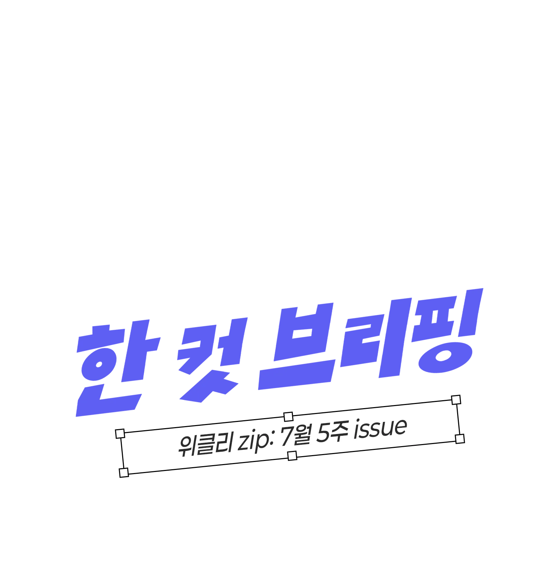
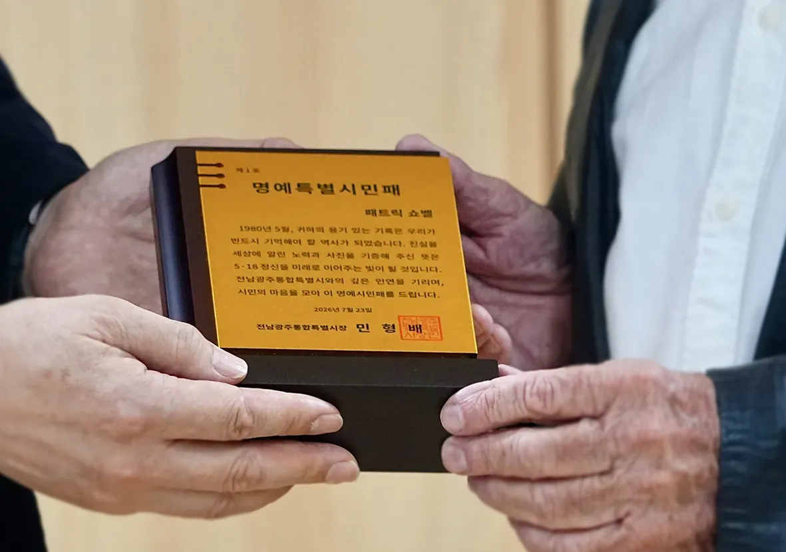
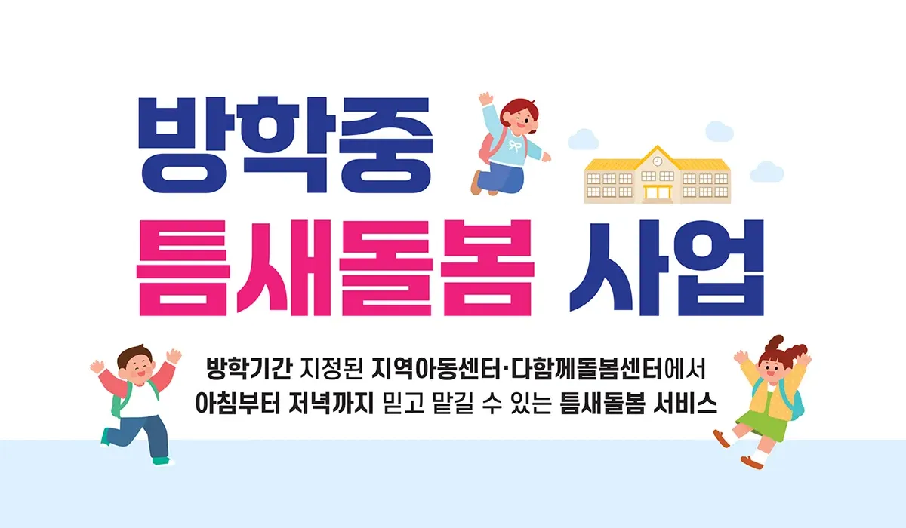
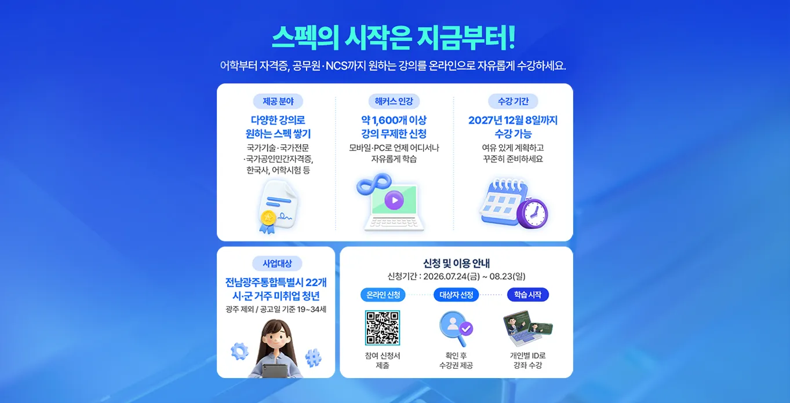
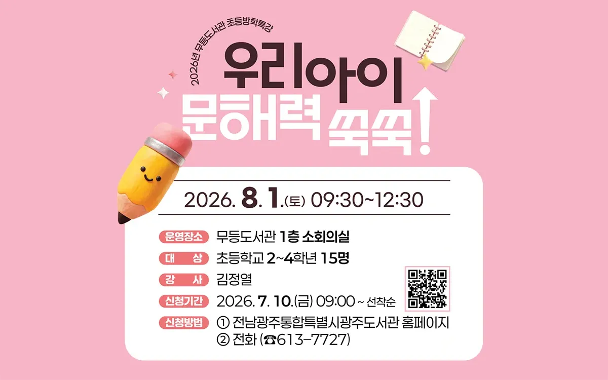
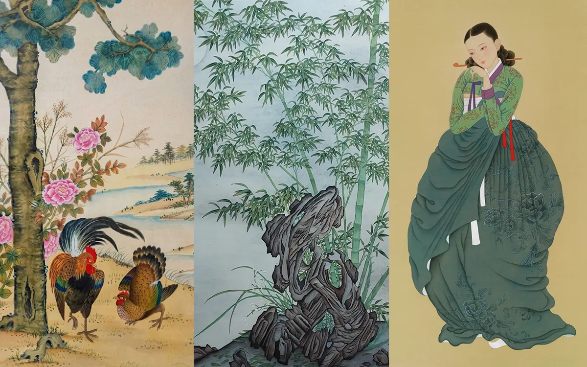

전남광주통합특별시 한 컷 브리핑 — 위클리 zip 7월 5주 이슈 총정리

이번 주 화제의 이슈

이송부터 최종 진료까지 원스톱으로,
전남광주 59개 응급실 하나로 연결
사는 곳에 관계없이 누구나 제때 치료받을 권리를 제공합니다. 전남광주통합특별시가 시민 생명의 골든타임을 지키기 위해 특별시 전역 59개 응급실을 하나로 연결하는 ‘생명망 하나로 3대 전략’을 추진합니다.
- 생명망 하나로 플랫폼 운영
- 육해공 신속 이송체계 마련
- 응급의료 통합컨트롤센터 운영
이젠 특별시 어디서나 골든타임 사수를 목표로 시민의 건강을 지킬 예정인데요. 의료 시설이 열악한 도서·산간의 이송 공백이 크게 개선될 것으로 기대되고 있어요.
생명망 하나로 전략 자세히보기
명예시민이 된 프랑스 기자 이야기,
전남광주통합특별시 1호 명예시민 탄생
1980년 5월 광주의 진실을 전 세계에 알린 프랑스 출신 기자 패트릭 쇼벨. 목숨을 걸고 기록한 사진 635점을 아무 조건 없이 5·18기록관에 기증한 그의 헌신에 감사하며, 전남광주통합특별시가 첫 번째 명예시민이라는 이름으로 감사의 마음을 전했어요.
이번 명예시민 1호 선정은 광주의 진실을 국제사회에 알리고 소중한 자료를 시민의 품으로 돌려준 그의 헌신을 기리는 의미랍니다.
- 대상패트릭 쇼벨 (프랑스 출신 기자)
- 기증5·18 기록사진 635점,
아무 조건 없이 5·18기록관에 기증 - 의미전남광주통합특별시 명예시민 제1호

전남광주는 돌봄에 진심이니까,
여름방학에도 틈새 돌봄으로
보호자들의 돌봄 부담이 커지는 여름방학, 전남광주통합특별시가 ‘초등학생 틈새 돌봄 사업’으로 부담을 확실하게 덜어드립니다.
7월 27일부터 8월 셋째 주까지 방학 동안 지역아동센터(179개소)와 다함께돌봄센터(41개소)를 틈새돌봄센터, 점심 돌봄 센터로 지정해 돌봄 공백이 우려되는 4,500명에게 점심, 저녁 식사와 온종일 돌봄을 제공할 예정이거든요.
- 기간7월 27일 ~ 8월 셋째 주
- 대상초등학생이라면 누구나 이용 가능
(돌봄 공백 우려 4,500명 지원) - 운영지역아동센터 179개소,
다함께돌봄센터 41개소 - 신청틈새·점심 돌봄 센터로 직접 신청
- 문의야간 돌봄 지원창구 1522-1318
널리 알리고 싶은 반가운 소식

‘강진 백련당과 연지’에 경사 났어요,
엣헴 이젠 자연유산이라고 불러주세요
전남광주통합특별시가 ‘강진 백련당과 연지’를 자연유산으로 신규 지정했습니다.
- 유래16세기 중엽 원주이씨 강진 입향조 이남이 터를 잡으며 연못을 파고 연꽃을 심은 데서 시작
- 평가전통 조경과 건축미의 조화, 수려한 생태경관, 뛰어난 차경 수법
전통 누정 건축의 진수를 보여주고 있다는 평가를 받고 있어요.
강진 백련당과 연지 자세히보기아픔을 기억하고 회복을 함께합니다,
여순 10·19트라우마치유센터 순천에 개소
여순 10·19사건 피해자와 유족의 심리 회복을 지원할 전담 치유기관인 ‘여순10·19트라우마치유센터’가 순천에 문을 열었어요.
트라우마치유센터는 국가폭력 피해자와 그 가족의 심리적 고통을 치유하고 건강한 삶의 회복을 지원하기 위해 설립된 행정안전부 산하 전문 치유기관인데요. 앞으로 여순10·19트라우마치유센터는 단순한 개인 상담 공간을 넘어 치유와 연대의 가치를 확산하는 ‘공동체 회복의 거점’ 역할을 할 계획이에요.
치유센터 개소 소식 자세히보기특별시민을 위한 특별한 혜택

숙박비 최대 12만원 할인?
JG TOUR에서 확인하세요
전남관광플랫폼(JN TOUR)이 전남광주관광플랫폼(JG TOUR)으로 새롭게 태어났습니다. 새단장을 기념해 혜택 빵빵 이벤트를 준비했는데요.
- 남도 숙박할인 빅 이벤트 — 결제 금액에 따라 최대 12만원 숙박비 할인
- 전남 1+1 투어 — 요트, 두륜산 케이블카, 녹차 족욕카페 등 다양한 체험상품을 1명 가격으로 2명 이용
숙박비 부담도 줄이고 매력만점 전남광주를 다양하게 만나요. 전남광주관광플랫폼에 많.관.부!
JG TOUR 혜택 자세히보기
미취업청년 1천 100명에
인강 수강권 쏜다!
전남에 거주하는 19세~34세 이하 미취업청년 1천 100명에게 1인당 20만원 상당의 온라인 수강권을 지원하는 ‘청년 잡업(Job Up) 프로젝트’를 시작합니다.
- 대상전남 거주 19세~34세 이하 미취업청년 1천 100명
- 지원1인당 20만원 상당 온라인 수강권
- 신청 기간2026. 07. 24.(금) ~ 선착순
- 신청 방법광주전남청년통합 플랫폼 (youth.gwangju.go.kr)
꿈도 Job고, 취업도 Job고! 온라인 강의 신청하고 필요한 분야의 지식을 넓혀보세요.
청년 잡업 프로젝트 자세히보기
인문 감성 그게 뭔데…?
알고 싶다면 광주도서관으로
시원한 에어컨 바람 밑에서 북캉스를 즐겨볼까? 광주의 도서관들이 방학을 맞아 책과 예술을 동시에 즐기는 도심 속 피서 프로그램을 선보입니다.
- 무등도서관 : 우리 아이 문해력 쑥쑥, 여름 독서 교실 등
- 산수도서관 : 북캉스 한국 문학, 2026 북스타트 부모교육 등
- 하남도서관 : 우리들의 행복 놀이터, 시니어 독서 인지 놀이 등
- 디지털정보도서관 : 웹툰 첫걸음, 여행으로 떠나는 세계 특집 영화 등
- 시립점자도서관 : 점자 교육, ‘오월, 소년의 기억을 걷다’ 점자 도서 제작 등
프로그램 참여 신청 및 자세한 내용은 광주도서관 누리집에서 확인 가능합니다.
도서관 여름 프로그램 자세히보기알아 두면 쓸모 있는 특별시 정보

여름방학 고민이 시작되었다면
어린이 과학체험 교실로
광주보건환경연구원이 여름방학을 맞아 어린이들에게 문을 활짝 열었어요. ‘어린이 과학체험교실’ 참여하세요.
- 대상초등학교 2~6학년
- 일시8/5(수), 8/6(목) 오전 10시 / 오후 2시
- 신청전남광주통합특별시 누리집 ‘바로예약’
- 신청 기간2026. 07. 28.(화) ~ 07. 31.(금)까지
프로그램은 동물 교실과 보건 교실 두 가지인데요. 야생동물의 생태를 관찰하고 다친 야생동물의 구조와 치료를 참관하는 등 흥미로운 프로그램이 가득하답니다.
어린이 과학체험교실 자세히보기
만화 말고 민화입니다,
민화전시 보고 가세요
현대적 감각으로 풀어낸 민화·채색화 감상하세요. 전남광주통합특별시농업박물관이 특별전 ‘민화, 초록에 물들다’를 선보입니다.
- 전시 기간2026. 08. 13.(목)
- 전시 장소전남광주통합특별시농업박물관 기획전시실
- 관람료무료
민화는 꽃과 나무, 새와 동물 등 친숙한 소재를 통해 건강과 장수, 부귀와 평안, 액운을 막고 복을 바라는 마음을 표현한 그림인데요. 일상의 평안을 바라는 민화 전시를 통해 일상에서 작은 위로와 기쁨을 느껴보세요.
민화 특별전 자세히보기주말엔 해남으로 고?
친환경 체험프로그램 운영
휴가철을 맞아 해남우수영 관광지가 온가족을 위한 친환경 체험프로그램을 운영해요.
- 기간2026. 07. 25.(토) ~ 08. 16.(일)
매주 토·일 - 운영 시간10:30 ~ 15:00
- 장소명량대첩해전사기념전시관
- 프로그램마리모 만들기, 울돌목 테라리움 만들기, 마크라메 도어벨 만들기, 커스텀 팔찌 만들기 등
- 체험비1만원 (해남군 지원 5천원 + 개인 부담 5천원)
역사와 문화, 자연이 어우러진 우수영 관광지에서 색다른 즐거움을 만나보세요!
해남우수영 체험프로그램 자세히보기특별히 즐거운 특별시 뉴스

바다, 숲, 계곡 골라가는 재미!
올여름은 전남광주에서 즐기실게요
전남광주통합특별시가 추천하는 여름 특별 여행지는 어디일까? 다양한 매력의 해수욕장부터 머릿속까지 시원해지는 숲과 계곡, 낭만 가득한 도심 골목과 야경, 그리고 여름휴가를 빛낼 즐거운 축제와 이벤트까지!
어딜 선택해도 후회 없을 거예요. 끝내주는 여름 휴가를 보내고 싶다면 이번 여름은 전남광주통합특별시입니다. 카드뉴스로 소개해 드릴게요.

물놀이 멀리 갈 필요 있나요,
도심 물놀이장 개장
바다나 계곡까지 멀리 갈 수 없다면 도심 물놀이장에서 무더위를 날려요! 광주 도심 물놀이장 6곳이 운영을 시작했습니다.
- 북구광주시민의 숲, 중외공원
- 서구상무시민공원, 쌍학어린이공원, 마륵공원
- 무안무안청사 시민광장
- 기간7월 18일 ~ 8월 16일, 전 시설 무료
방문 전 운영시간, 이용방법 등 자세한 내용 확인 바랍니다.
도심 물놀이장 자세히보기 editor’s pick · 모두크루 안규선 님이 취재한 도심 속 무료 물놀이장우리 동네 노래 대장 모여라!
섬-셋 노래자랑 개최
7월 31일 보라보라한 신안 안좌도 퍼플섬에서 ‘섬-셋 노래자랑’이 열려요. ‘섬-셋 노래자랑’은 섬(Island)·일몰(Sunset)·쉼(Rest)의 의미를 담은 주민·관광객 참여형 문화행사에요.
- 일시7월 31일
- 장소신안 안좌도 퍼플섬
- 공연가수 박구윤 특별 공연
아름다운 섬 풍경 속에서 음악을 즐기며 특별한 여름밤을 만끽할 수 있죠! 7월 31일에는 퍼플섬에서 만나요.
섬-셋 노래자랑 자세히보기